Skills & Proficiencies
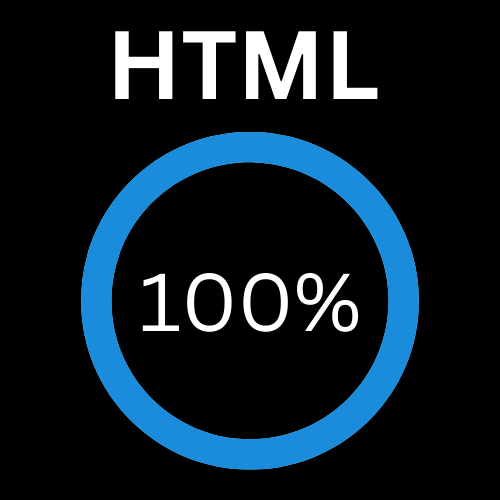
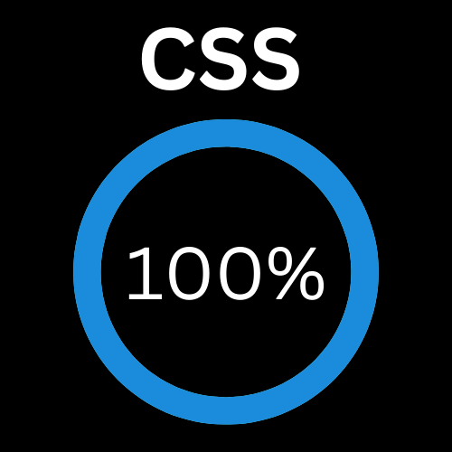
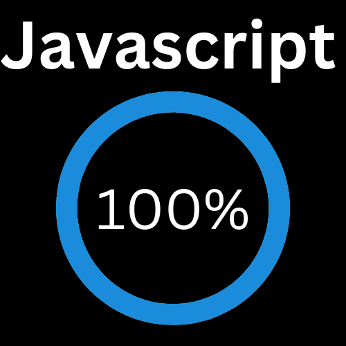
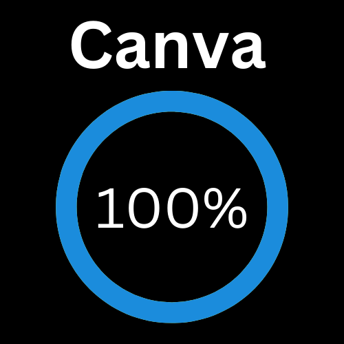
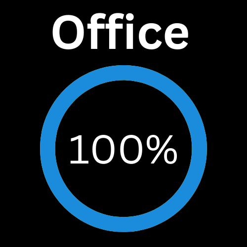
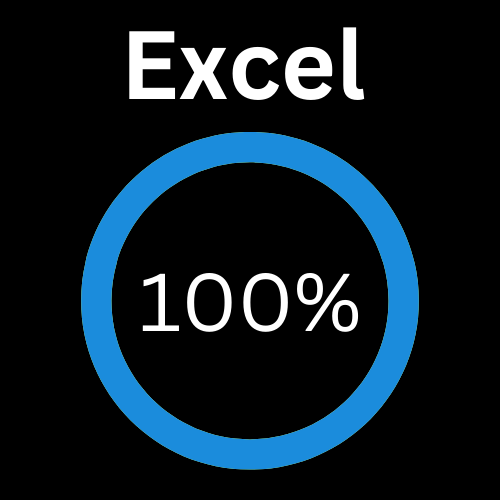
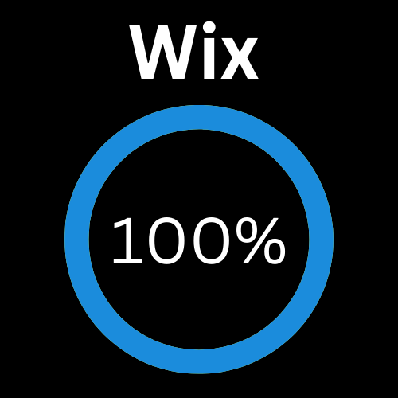
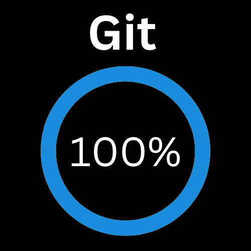
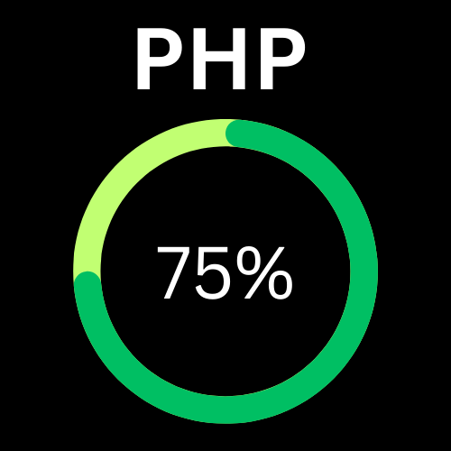
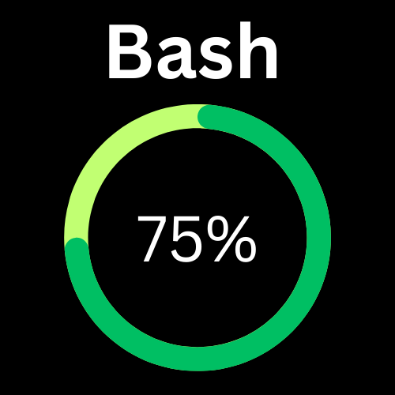
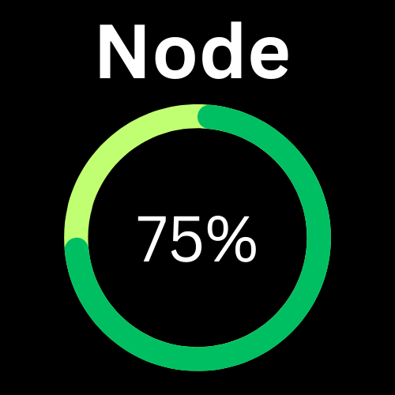
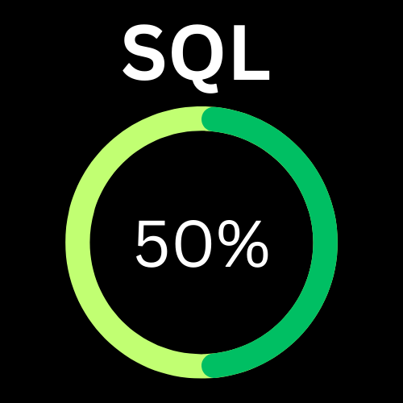
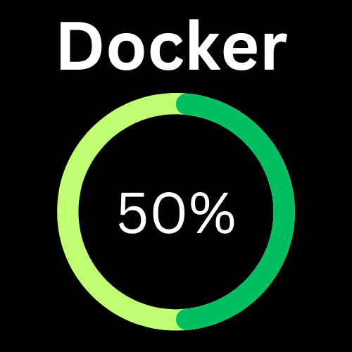
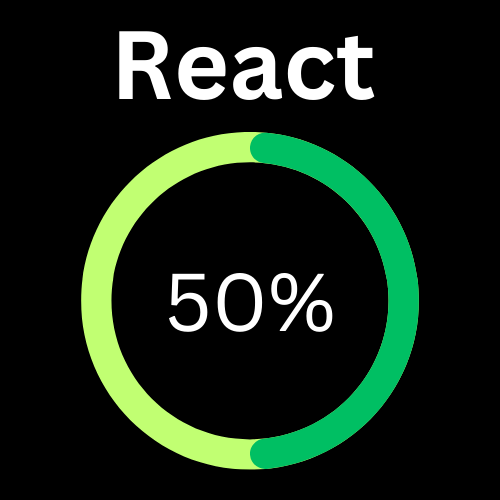
Why I'm Right for This Campaign
Your campaign needs clarity, speed, and control. I bring all three. I have years of experience building sites that perform under pressure—whether it's a political launch, an emergency update, or a complete platform overhaul. My skills in automation, SEO, accessibility, and platform security mean you're not hiring just a web developer — you're hiring a full-stack strategist who can deliver results, meet deadlines, and build tools that make your message louder and your team faster. I understand how to translate urgency into action, without sacrificing design or stability.
Featured Projects
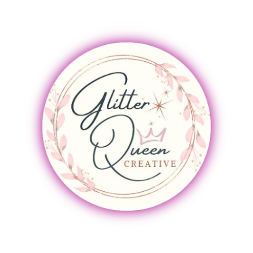
Glitter Queen Creative
WordPress e-commerce site for luxury handmade jewelry. Custom WooCommerce setup with product filtering, loyalty system, and SEO-rich product descriptions.
Skills Used
- WordPress Development: Custom e-commerce site creation using WordPress with a focus on user-friendly design and seamless functionality.
- WooCommerce: Implementation and customization of WooCommerce for product management, shopping cart, and payment gateway integration.
- Custom Theme: Tailored WordPress themes to create a unique, branded aesthetic for the luxury jewelry store.
- Loyalty System: Development and implementation of a loyalty program to encourage repeat purchases and customer retention.
- SEO: Crafting SEO-rich product descriptions and optimizing site structure to improve search engine visibility and ranking.
- Responsive Design: Ensured the site is fully responsive and optimized for various devices, offering a seamless experience for desktop, tablet, and mobile users.
- Performance Optimization: Applied various techniques to improve site speed and performance, ensuring a smooth and fast browsing experience for users.
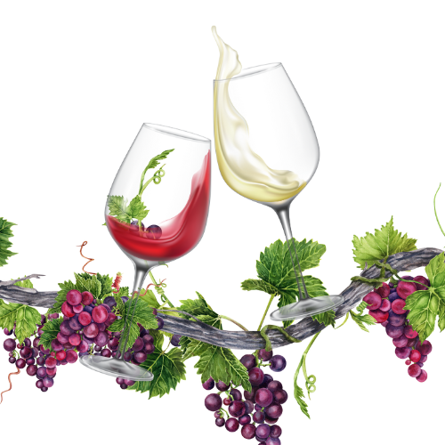
The Pour Choice
Responsive wine education site with quizzes, interactive lessons, and recipe pairings. Designed to make content fun, engaging, and mobile-friendly.
Skills Used
- HTML: Structured the site’s content using semantic HTML, ensuring accessibility and SEO-friendly markup for improved search engine rankings.
- CSS: Applied custom styling using CSS to create a visually appealing, responsive design that adapts seamlessly to different screen sizes.
- JavaScript: Developed interactive elements such as quizzes and dynamic lessons using JavaScript, enhancing user engagement and functionality.
- Interactive Quizzes: Implemented quiz functionality to engage users and reinforce learning through interactive, dynamic content.
- Interactive Lessons: Created interactive lessons that allow users to explore and learn about wine in an engaging and fun way.
- Recipe Pairings: Integrated recipe pairing functionality, enabling users to find the perfect food and wine combinations for each lesson.
- User Experience (UX) Design: Focused on user-centric design to ensure ease of navigation, smooth interaction, and a fun, educational experience.
🚀 SEO Auditor CLI Tool
Production-grade SEO audit CLI tool that crawls websites, analyzes SEO structure, and generates professional CSV/HTML reports. Includes optional email reporting and Docker support.
Skills Used
- Docker: Utilized Docker to create a containerized version of the tool for easy deployment and scalability.
- Node.js: Developed the core functionality of the SEO auditor using Node.js, enabling fast and efficient crawling and analysis.
- SEO Analysis: Implemented advanced SEO auditing techniques such as crawling, link analysis, and page performance assessment.
- HTML/CSS: Generated professional, user-friendly reports in CSV and HTML formats for easy sharing and interpretation of SEO results.
- SMTP Email Reporting: Added optional SMTP functionality to send audit reports via email, streamlining the reporting process.
- CLI Tool Design: Created a command-line interface to allow for easy and efficient use of the tool in production environments.
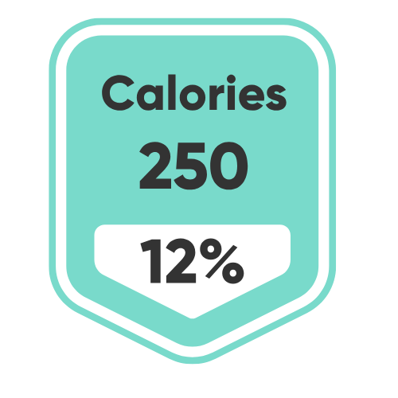
Calorie Tracker CLI Tool
A terminal-based calorie tracking tool that logs daily food intake, fetches calorie data from the Nutritionix API, calculates TDEE (Total Daily Energy Expenditure), and shows daily/weekly calorie deficits and estimated weight loss.
Skills Used
- Python: Developed the CLI tool using Python, utilizing libraries like `requests` to interact with APIs and `argparse` for command-line argument parsing.
- API Integration: Integrated the Nutritionix API to fetch real-time calorie data for foods consumed.
- CLI Tool Design: Created a terminal-based interface to log food intake, track calorie intake, and display results in a user-friendly manner.
- Real-time Data Calculation: Calculated TDEE, calorie deficit, and estimated weight loss by leveraging user inputs and the Nutritionix API data.
- Data Visualization: Used color-coded CLI output to visually indicate important information, such as deficits and calorie totals.
- Environment Setup: Provided a setup guide for setting up the development environment with `virtualenv` and installing dependencies from `requirements.txt`.